기성품 하네스의 한계와 Harness²
요즘 AI(Artificial Intelligence) 에이전트는 일을 시키는 틀을 미리 달고 나와요. 이 틀이 하네스예요. 문제는 이 틀이 모든 사람과 모든 일에 맞춰져 있다는 점이에요. 그래서 내가 시키려는 바로 그 일에는 딱 맞지 않을 때가 많아요.
연구진은 같은 모델을 많이 쓰는 하네스 네 개(CodeBuddy, OpenCode, Codex, Claude Code)에 그대로 넣어 봤어요. 아래 슬라이드의 세 칸이 분야별 1등이에요. 코드와 오피스는 Claude Code, 웹은 Codex가 앞섰어요. 모든 분야에서 1등인 하네스는 없었어요.
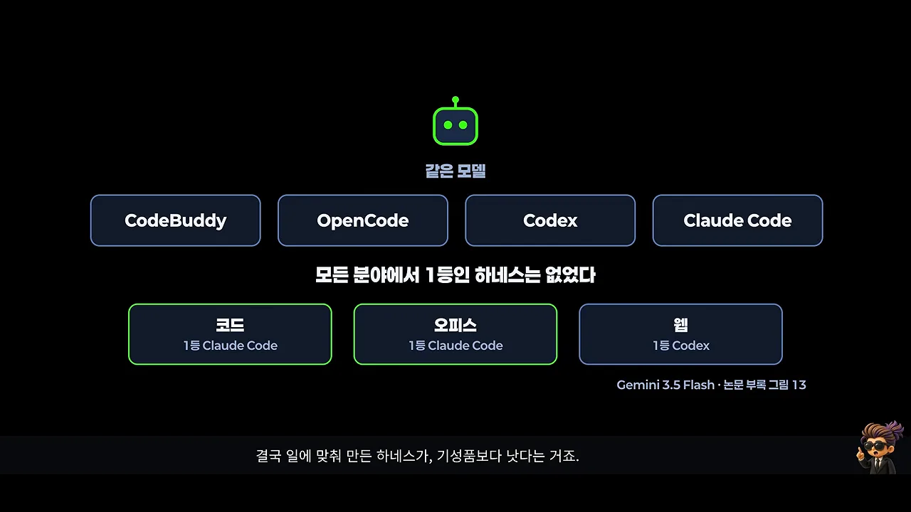
그럼 에이전트가 일을 받는 순간 그 일에 맞게 하네스를 스스로 고치면 어떨까요? 지시문을 다시 쓰고, 필요한 도구를 만들고, 일하는 흐름까지 바꾸는 거예요. 구글 클라우드 AI 리서치와 노스웨스턴 대학이 내놓은 Harness²(하네스 제곱)가 이 아이디어예요.
막대 두 개를 비교해 보세요. 왼쪽 파란 막대는 Gemini 3.5 Flash가 기본 하네스로 받은 72.4점이에요. 오른쪽 초록 막대는 더 작은 GLM-5가 스스로 고친 하네스로 받은 75.7점이에요.
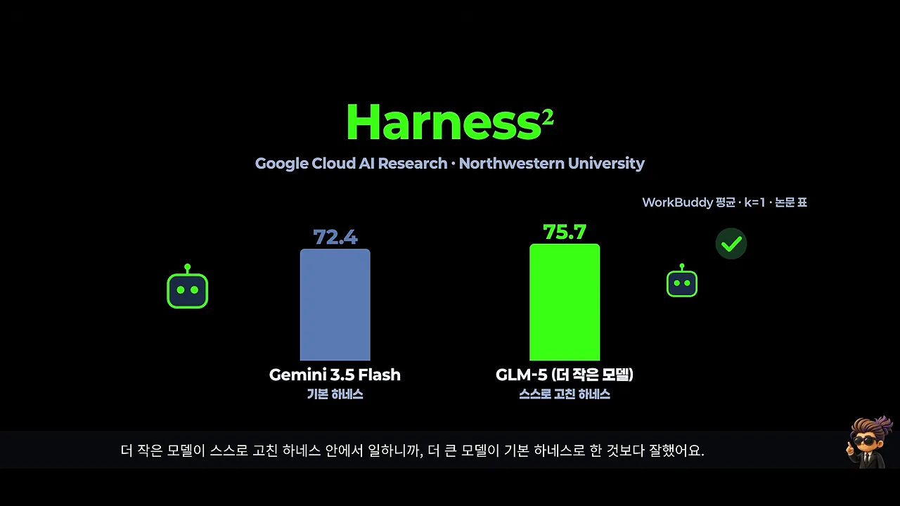
하네스가 뭔가요
하네스는 모델을 감싸서 일을 시키는 모든 것을 말해요. 슬라이드에서 가운데 '모델' 상자를 초록 점선이 감싸고, 그 네 귀퉁이에 지시문·도구·기억·규칙이 붙어 있어요. Claude Code나 Codex도 결국 이런 하네스의 한 종류예요.
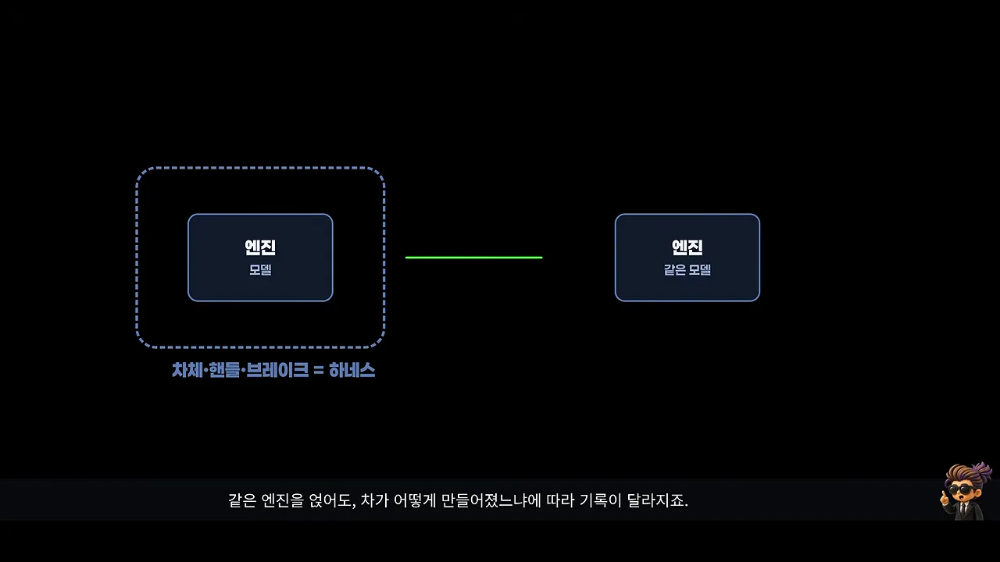
발표자는 자동차에 빗대요. 모델은 엔진이고, 하네스는 차체와 핸들, 브레이크예요. 오른쪽 차는 같은 엔진을 얹었지만 '더 잘 맞는 차체'로 바뀌었어요.
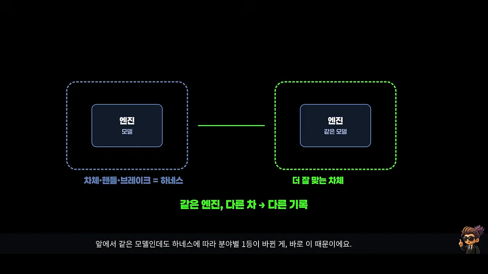
규칙을 한 줄 더하면 왜 안 될까요, 그리고 여덟 칸
AI가 일을 틀리면 보통 지시문에 규칙을 한 줄씩 더해요. '다음엔 이거 꼭 확인해' 같은 식이에요. 문제는 지시문이 항상 켜져 있다는 거예요. 한 줄 더할 때마다 모든 일, 모든 단계에서 그 줄을 다시 읽어요. 이번 일과 상관없는 규칙까지요.
논문도 비슷한 결과를 보여 줘요. 잘 고친 하네스에서 부품을 하나씩 빼 본 막대를 보세요. 스킬을 빼면 5.3점, 스크립트를 빼면 3.7점이 떨어졌어요. 지시문 묶음을 뺐을 때는 1.5점으로 가장 덜 떨어졌어요.
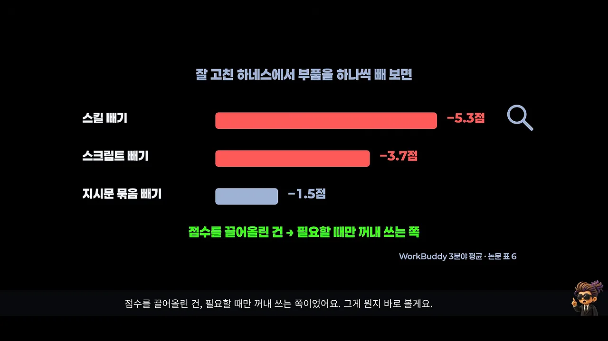
하네스를 여덟 칸으로 나눠요
Harness²는 하네스를 여덟 개 파일로 나눠요. 윗줄 네 칸은 '항상 읽힘', 아랫줄 네 칸은 '필요할 때만 꺼냄'이에요. 칸마다 실제 파일 이름이 작게 적혀 있어요(systemprompt.md, skills/, scripts/*.py, plugin/*.ts 등). 모두 파일이라서 AI가 일하다가 어느 칸이든 고칠 수 있어요.

| 칸 | 언제 읽히나 | 하는 일 | 영상이 든 논문 사례 |
|---|---|---|---|
| 시스템 프롬프트 | 항상 | 기본 지시문 | — |
| 가드레일 | 항상 | 하면 안 되는 일 | 엑셀 집계: 원본은 그대로 두고 정리 규칙부터 |
| 메모리 | 항상 | 다음에도 기억할 메모 | — |
| 도구 안내 | 항상 | 도구를 언제 어떻게 쓰는지 | 부르는 척 금지 한 줄 → 그 과제 만점 |
| 스킬 | 필요할 때 | 특정 일을 하는 요령 | 계약서 수정 표시 읽기 44.4 → 94.5 |
| 스크립트 | 필요할 때 | 기계적인 확인과 계산 | 숫자 수백 개 맞춰 보기 |
| 서브에이전트 | 필요할 때 | 긴 자료를 대신 읽고 요약 | 필요한 표 한 장만 받아 오기 |
| 플러그인 | 늘 작동 | 일하는 흐름에 끼우는 장치 | 결과물 없이 계속 부르면 경고 72 → 100 |
항상 읽히는 네 칸: 짧게, 대신 꼭 필요한 한 줄
위 네 칸은 매번 읽히니까 짧아야 해요. 대신 꼭 필요한 한 줄은 효과가 커요. 빨간 상자의 '도구를 부르는 척'은 도구를 실제로 부르지 않고 글로만 적던 AI예요. 오른쪽 초록 상자처럼 도구 안내에 '그러지 말 것' 한 줄을 넣자 그 과제가 만점이 됐어요.
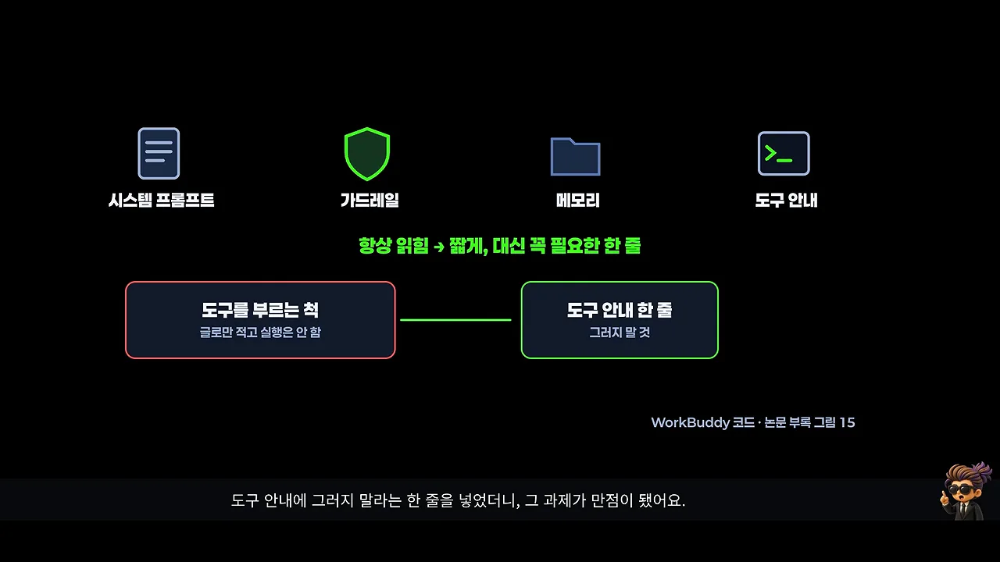
필요할 때만 꺼내는 네 칸
스킬은 특정 일을 하는 요령을 따로 적어 둔 메모예요. 평소엔 안 읽다가 그 일이 나올 때만 꺼내요. 슬라이드의 예는 워드 문서의 수정 표시(변경 내용 추적)를 못 읽어서 계약서 과제를 망치던 AI예요. 읽는 법을 스킬로 적어 두자 점수가 44.4에서 94.5로 올랐어요.
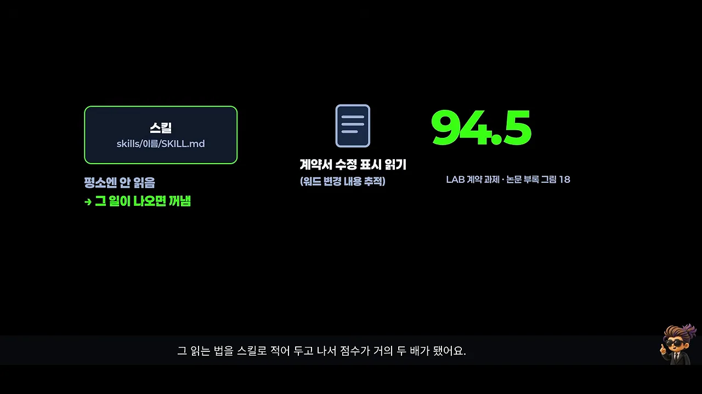
스크립트는 AI가 약한 일을 맡아요. AI는 숫자 수백 개를 머릿속으로 맞춰 보는 걸 잘 못해요. 그래서 check_totals.py 같은 작은 파이썬 프로그램을 만들어 기계적으로 확인하게 해요. 그림 아래 초록 글씨처럼 같은 입력이면 늘 같은 답이 나와요.
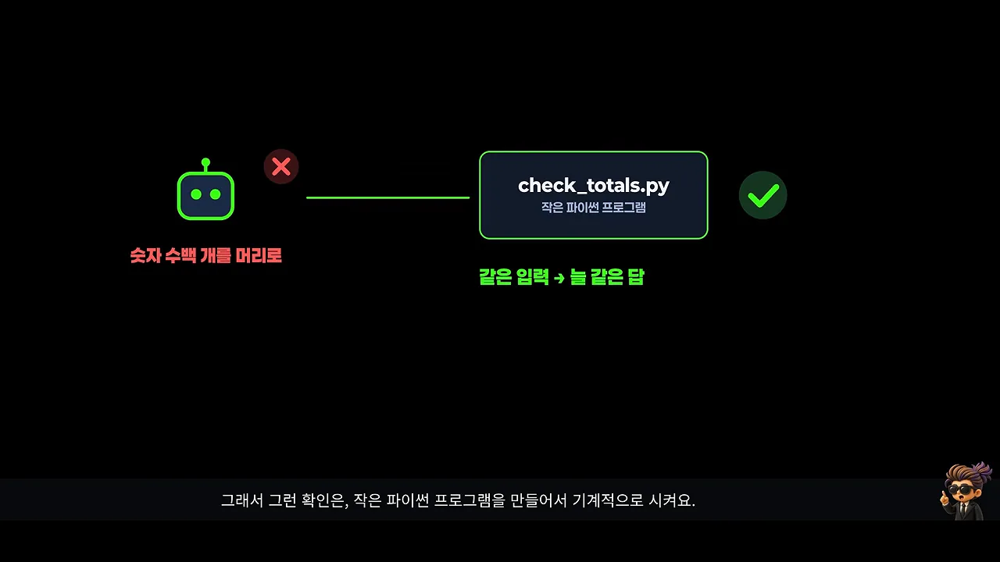
서브에이전트는 긴 자료를 잔뜩 읽어야 할 때 써요. 왼쪽 문서 더미를 가운데 보조 AI가 읽고, 오른쪽 '표 한 장'만 넘겨줘요. 그래서 원래 AI의 머릿속이 깨끗하게 유지돼요.
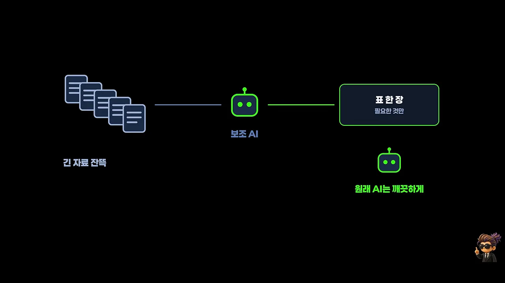
부품은 따로 쓰이기보다 여러 개가 같이 고쳐질 때가 많아요. 엑셀 집계 과제에서 AI가 엉뚱한 단위로 묶어 합계를 냈어요. 그러자 집계 단위를 정해 주는 스킬, 그리고 '원본은 그대로, 정리 규칙 먼저'라는 가드레일이 함께 생겼어요. 23.6점이던 과제가 100점이 됐어요.
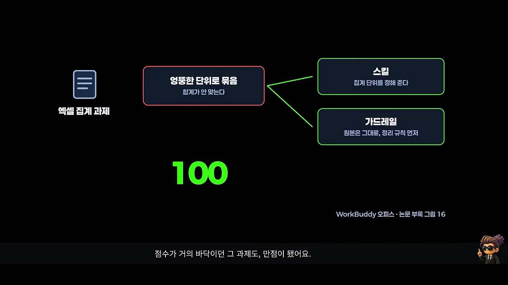
가장 큰 변화, 플러그인
플러그인은 일하는 흐름 자체에 끼워 넣는 장치예요. 지시문에 쓴 규칙은 부탁이라서 바쁘면 무시할 수 있어요. 플러그인은 장치라서 무시가 안 돼요. 슬라이드의 논문 사례에서 Claude Opus 5는 조사만 하다가 마감 직전까지 결과 파일을 0개 썼어요. '결과물 없이 계속 부르면 경고' 장치를 다른 고침들과 함께 넣자 72점이 100점이 됐어요.

정답지 없이 고치기: 제안·시험·합치기
처음 보는 일에는 정답지가 없어요. 그럼 하네스를 고친 뒤 뭐가 나아졌는지 어떻게 알까요? Harness²는 이걸 제안·시험·합치기 세 단계로 풀어요.
제안: 기록을 편집자 둘이 읽어요
먼저 기본 하네스로 한 번 일을 시켜요. 이게 기준 실행이에요. 점수는 몰라도 실행 기록을 보면 어디서 헤맸는지는 보여요. 슬라이드에서 그 기록이 두 갈래로 나뉘어요. 위 inv1은 도구 에러나 일하는 순서처럼 어디서나 통하는 방식만 고치고, 아래 dom1은 회계사나 변호사처럼 그 분야 지식을 더해요.

시험과 합치기: 점수 대신 행동을 봐요
다음은 시험이에요. 두 후보 하네스로 같은 일을 다시 시켜요. 이때도 정답지는 보지 않아요. 점수 대신 처음 실행과 행동이 어떻게 달라졌는지 봐요.
마지막은 합치기예요. 어느 결과가 더 그럴듯한지가 아니라, 처음에 틀렸던 그 지점을 실제로 고쳤는지 나란히 놓고 봐요. 슬라이드 오른쪽 네 개의 초록 칸이 합칠 때 고를 수 있는 길이에요. 둘을 합치거나, 고쳐서 쓰거나, 하나만 고르거나, 도움이 안 됐으면 원래 하네스를 그대로 둬요.
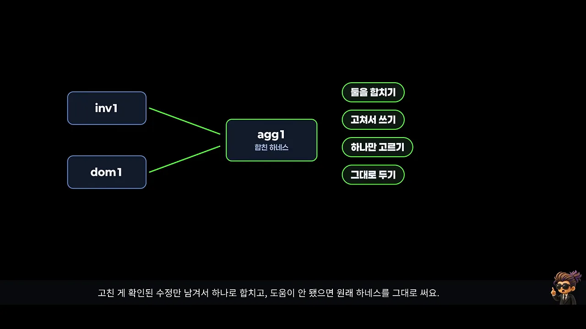
합친 하네스(agg1)로 한 번 더 풀어요. 그래서 한 번 고칠 때마다 실행이 네 번 들어가요. 아래 그림은 여러 슬라이드에 흩어진 흐름을 한 장으로 모은 거예요.
실제 수정 하나를 볼게요. 은행 기록과 회사 장부를 맞춰 보는 과제였어요. 슬라이드 왼쪽처럼 두 파일에는 37.56달러 차이가 있었어요. 그런데 처음 실행에서 AI는 '차이 0, 장부 일치'라고 보고했어요. 편집자가 이 기록을 보고 넣은 규칙이 아래 초록 칸이에요.
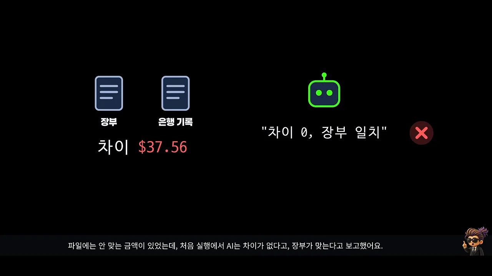
왜 '제곱'일까요: 교훈 도서관
이번 과제에 딱 맞춘 하네스를 다음 과제에 그대로 쓰면 오히려 방해가 돼요. 규칙 절반은 이번 일에만 맞기 때문이에요. 그래서 고치는 단계가 둘이에요. 한 단계는 지금 일에 맞게 하네스를 고치고, 또 한 단계는 고치면서 배운 걸 정리해요.
슬라이드에서 과제 1의 '채택된 하네스'가 가운데 교훈 도서관(library/INDEX.md)에 들어가요. 오른쪽 과제 2는 깨끗한 기본 하네스에서 시작해서, 도서관에서 쓸모 있는 스킬과 도구만 꺼내 와요.

결과: 한 하네스로 모든 분야 1등
결과를 보면 코드 +4.6점, 웹 +5.8점, 오피스 +4.9점이에요. 세 분야 모두 그 분야 1등 기성 하네스보다 높았어요. 앞에서 분야마다 1등이 달랐던 걸 떠올리면, Harness² 하나로 전부 앞선 거예요.
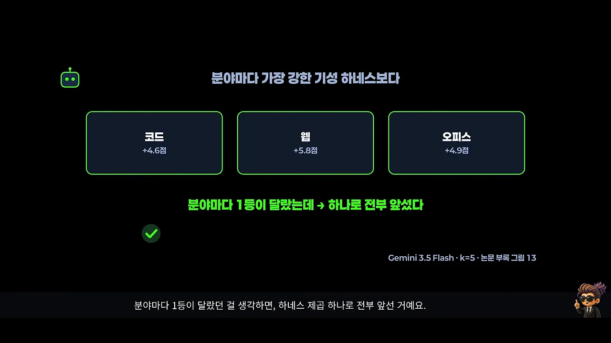
발표자가 가장 쓸모 있다고 본 결과는 따로 있어요. Gemini 3.5 Flash용으로 고친 하네스를 더 작은 GLM-5에 그대로 줬더니 코드 점수가 17.3점 올라 75.8점이 됐어요. 큰 모델로 하네스를 잘 다듬어 두고, 실제 일은 싼 모델에게 맡길 수 있다는 얘기예요. 아래 Opus 4.8은 +2.6점과 +1.1점에 그쳤어요. 모델이 약할수록 하네스 덕을 더 봐요.
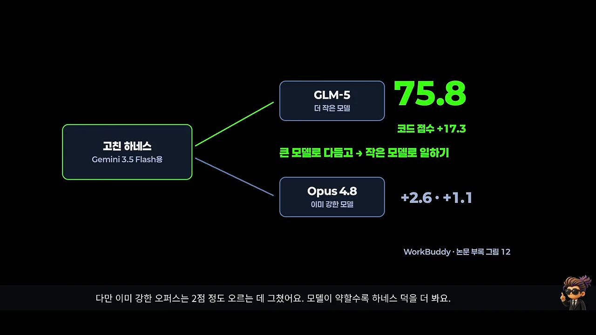
설치와 API 키 없는 데모
발표자는 GitHub에서 저장소를 받아 둔 폴더에서 시작해요. 설치는 uv라는 파이썬 도구로 해요. 파이썬 3.12로 가상 환경을 만들고 저장소를 설치하면 몇 초면 끝나요.
uv venv --python 3.12 .venv
source .venv/bin/activate
uv pip install -e '.[render]'
harness2-demo --output runs/demo --k 2저장소에는 API(Application Programming Interface) 키 없이 돌려 볼 수 있는 데모가 들어 있어요. 진짜 AI 대신 정해진 대로 고치는 가짜 편집기를 쓰지만, 고친 코드는 실제로 실행해요. 터미널을 보면 장부 과제 두 개(ledger-1, ledger-2)를 k=2로 돌렸고, 초록 표시처럼 '2 tasks completed; 0 failed'가 떴어요. 3초도 안 걸렸어요.
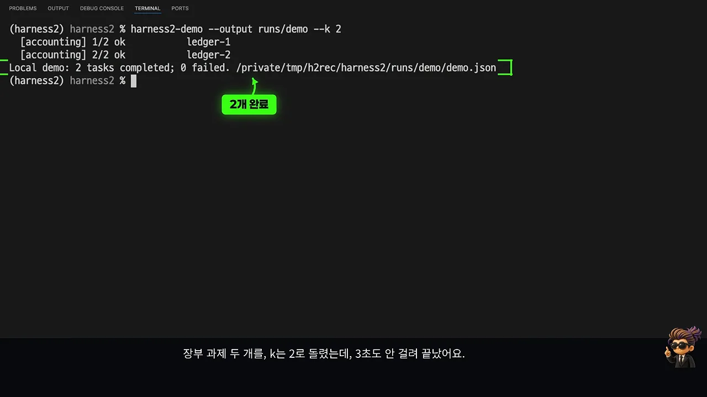
runs/demo/demo.json)까지 찍어 줘요. 영상 07:50에서 보기결과 폴더에서 볼 세 파일
먼저 처음 하네스에 들어 있던 합계 스크립트(summarize.py)예요. 초록 테두리가 친 7번째 줄을 보세요. if amount > 0 조건 때문에 금액이 0보다 큰 것만 더해요. 그래서 마이너스로 적힌, 나간 돈이 합계에서 빠져요.
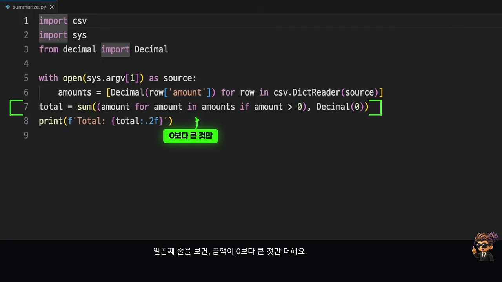
edits 파일에는 무엇을 왜 고쳤는지 적혀 있어요. 고친 부품(scripts/summarize.py), 바꾼 내용, 다시 실행해 보니 달라진 점, 그리고 'helped(도움이 됐다)'라는 판정까지요.
도서관에 저장된 경험 파일은 이 하네스를 왜 골랐는지가 먼저 나오고, 맨 아래 'Transferable lesson'에 다음에 쓸 교훈이 있어요. 초록 테두리 두 줄이 그거예요. 장부에 들어온 돈과 나간 돈이 섞여 있으면 합계 때 부호 둘 다 더하라는 내용이에요.
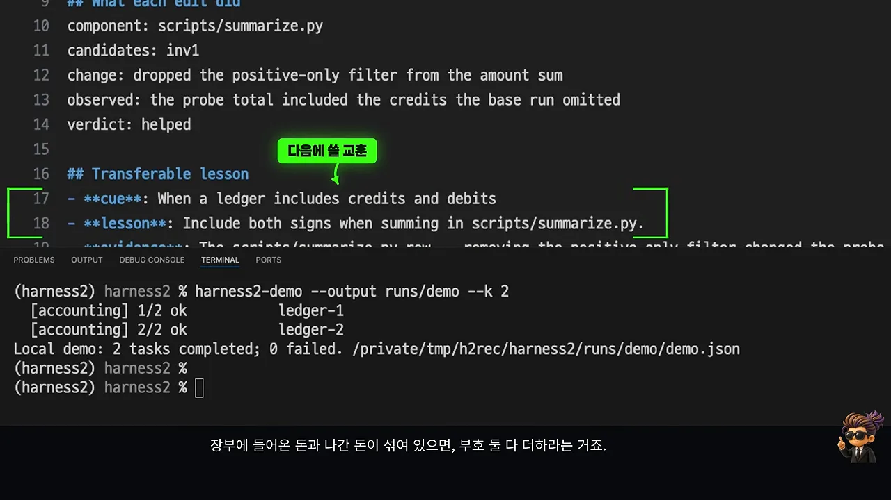
마지막으로 INDEX 파일이 도서관의 목록이에요. 다음 회계 과제는 이 목록부터 읽고 시작해요.
진짜 과제 돌리기 (OpenRouter GLM-5.3)
이번엔 진짜 과제를 돌려요. 모델은 OpenRouter라는 서비스로 GLM-5.3을 불러 써요. 설정 파일(.env)에 과제를 푸는 모델(HARNESS2_SOLVER_MODEL)과 채점하는 모델(HARNESS2_JUDGE_MODEL)을 적어 뒀어요. 초록 표시 줄처럼 채점 모델도 GLM-5.3이에요.
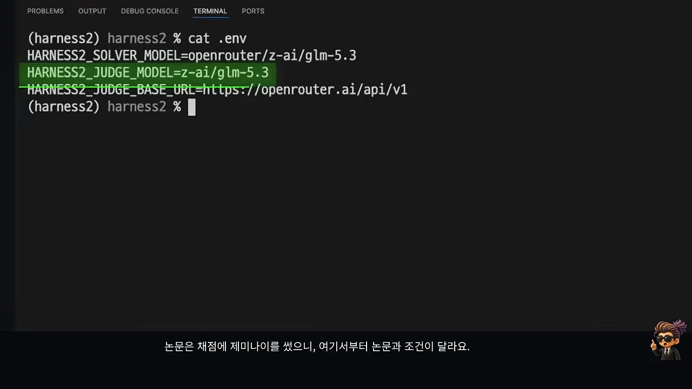
맥에서 돌리려고 손본 두 가지
- timeout 명령을 대신할 shim을 만들어요 — 맥에는 리눅스의
timeout명령이 없어요. 같은 일을 하는 작은 파이썬 파일을shim폴더에 넣고PATH맨 앞에 뒀어요. - 키는 다른 파일에서 읽어 와요 — 화면에 키가 나오지 않게
env.sh가 다른 파일에서 읽어요. 처음엔 키를 감싼 따옴표까지 같이 읽혀서 인증이 실패했어요. 그래서 따옴표를 떼는 처리(tr -d)를 붙였어요.
준비가 됐는지 확인하면(harness2-check --bench jb) 'Ready: jb/oc; 65 tasks'가 떠요. 과제 65개가 준비됐다는 뜻이에요.
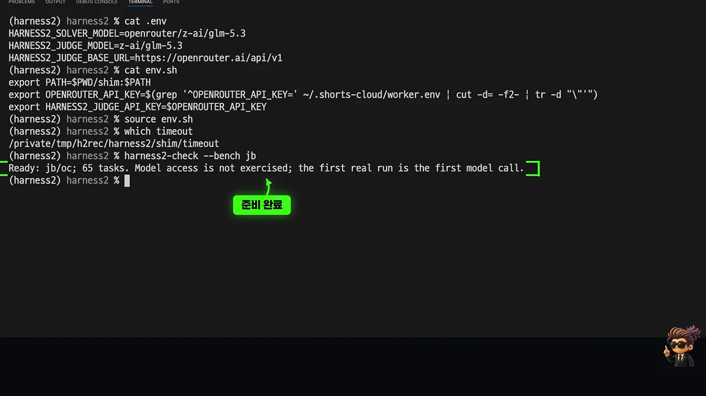
which timeout이 shim 폴더를 가리키는 것도 같은 화면에서 확인할 수 있어요. 영상 09:35에서 보기한 과제에 64분, 실행 네 번
장부 분야 과제 하나만 k=1로 돌려요. 먼저 지금 하네스로 푸는 기준 실행이 16분쯤 걸렸어요. 끝나면 개선하는 AI가 기록을 읽고 후보 두 개를 만들고, inv1과 dom1이 동시에 같은 과제를 풀어요. 이게 15분쯤 걸렸어요. 이어서 둘의 행동 차이를 보고 합친 하네스 agg1을 만들어 한 번 더 풀어요. 마지막으로 결과를 정리하고 교훈을 도서관에 저장해요.
터미널 아래 초록 테두리가 끝을 알리는 줄이에요. '1 tasks ok, 0 failed'와 함께 다음에 돌릴 채점 명령(harness2.cli.judge)을 알려 줘요.
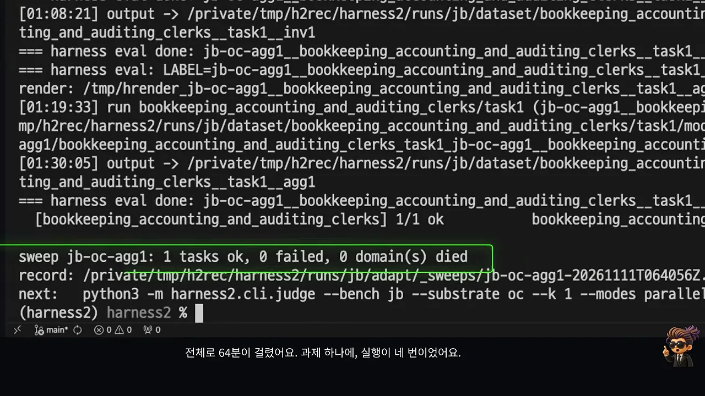
다 풀고 나면 채점을 따로 돌려요. 이 과제의 채점표는 88점 만점이에요. 결과는 61.36%, 합친 하네스가 88점 중 54점을 받았어요. 초록 테두리 줄은 개선 단계(편집자, 합치기, 선택, 정리)에 든 돈 1.10달러예요. 과제를 푸는 실행까지 합치면 이번에 5.35달러가 들었어요.
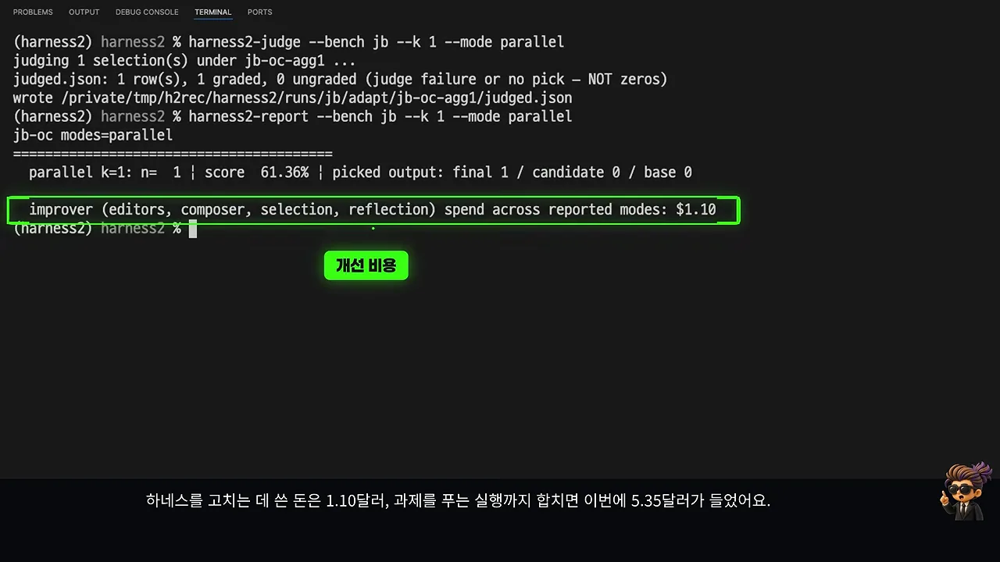
결과 파일 뜯어보기와 두 번 돌려 본 점수
처음 하네스의 시스템 프롬프트는 비어 있어요. 주석만 있어요. OpenCode를 기본 그대로 돌린다는 뜻이에요. 합친 하네스의 시스템 프롬프트에는 그 빈자리가 채워졌어요.
화면 첫 줄이 '회계 담당 직원(bookkeeping/accounting clerk)' 역할이에요. 초록 테두리 줄은 어떤 자료를 더 믿을지 정한 기준이에요. 현금 움직임은 은행 기록이, 발생한 거래는 총계정원장이 기준이에요. 그 아래로 일하는 순서 여섯 단계가 붙었어요. 요청한 파일을 일찍 만들고, 다 만든 파일은 다시 열어서 확인하라는 내용이에요.
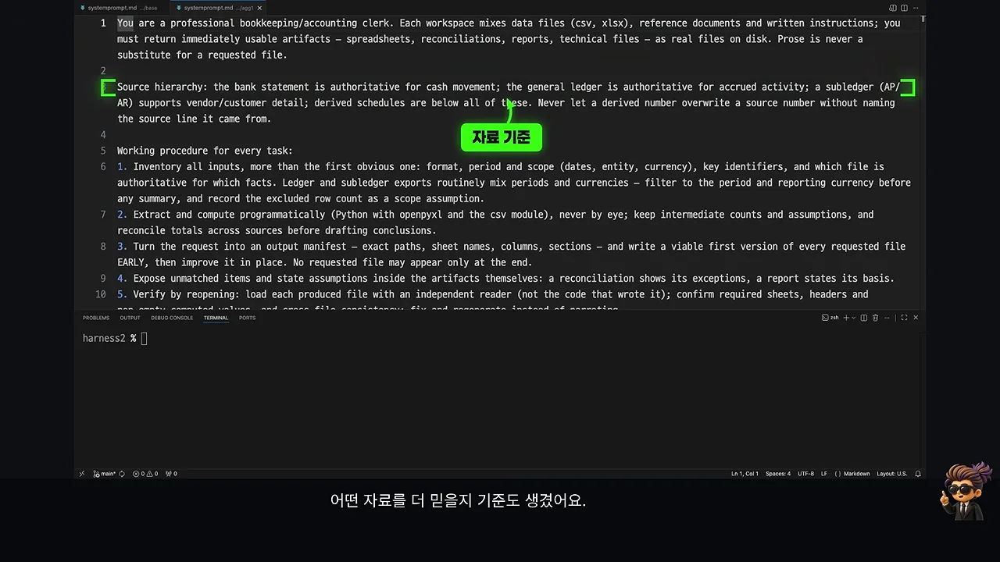
가드레일 파일(Always-on rules)에도 규칙 네 줄이 생겼어요. 초록 테두리의 첫 줄이 '표 전체를 대화에 쏟아붓지 말 것'이에요. 이어서 PDF(Portable Document Format)는 웹으로 읽지 말고 내려받아서 풀 것, 돈 계산은 센트 단위로 반올림할 것 같은 규칙이 있어요.
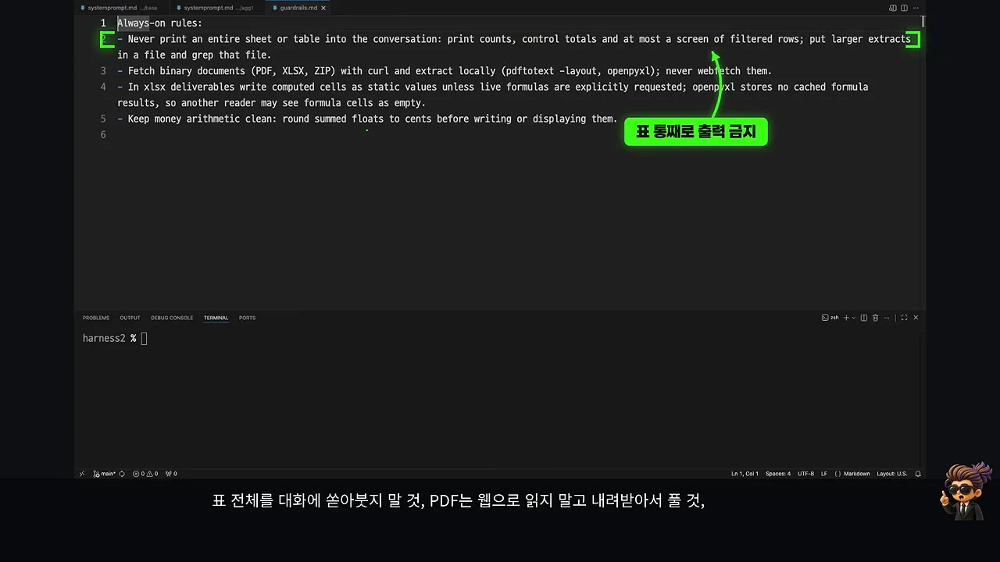
해가 된 스킬을 합치기 단계가 고쳤어요
edits 파일에는 부품마다 판정이 적혀 있어요. 도움이 됐다, 효과가 없었다, 그리고 여러 개를 한꺼번에 바꿔서 원인을 가를 수 없다는 판정도 있어요.
눈에 띄는 건 dom1이 만든 거래처 대조 스킬이에요. 이 스킬은 오히려 해가 됐다는 판정을 받았어요. 은행에는 ABC Supplies Inc, 장부에는 ABC Supplies처럼 이름이 조금씩 달랐거든요. 그래서 맞는 송장이 있는데도 증빙 없는 지급이라고 네 건을 잘못 표시했어요. 화면 아래 초록 테두리가 그 기록이에요.
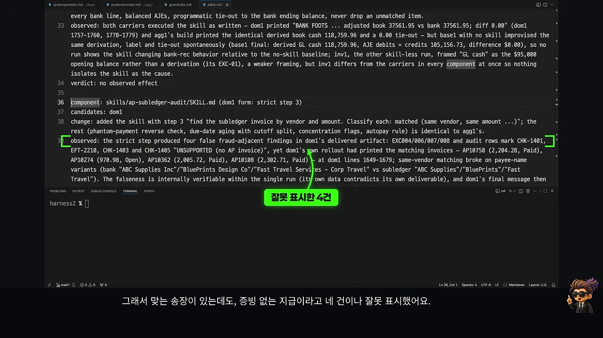
합친 하네스는 이 스킬을 고쳤어요. 금액으로 먼저 맞추고, Inc 같은 꼬리는 떼고 이름을 비교하게요. 그 덕분에 합친 하네스의 실행에서는 잘못 표시한 지급이 한 건도 없었어요. 이번 하네스는 교훈 도서관에 저장돼서, 다음 회계 과제가 먼저 읽게 돼요.
그런데 점수는 떨어졌어요
점수를 직접 볼게요. 화면의 base_judged.json이 처음 하네스, judged.json이 합친 하네스예요. 처음 하네스는 68점, 합친 하네스는 54점이에요. 이번엔 고친 쪽이 오히려 낮았어요.
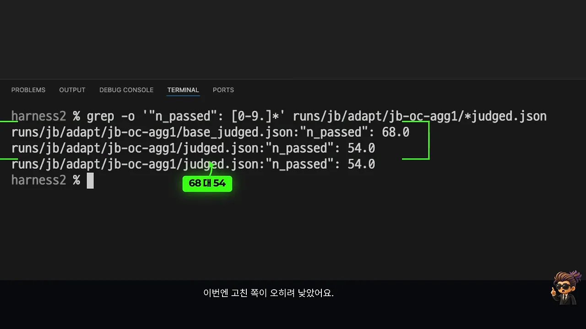
발표자는 같은 과제를 녹화 전에도 한 번 돌렸어요. 막대그래프의 왼쪽 묶음이 그 첫 번째 실행이에요. 처음 하네스 6.8에서 고친 하네스 38.6으로 크게 올랐어요. 오른쪽 묶음이 녹화한 두 번째 실행인데, 77.3에서 61.4로 떨어졌어요. 빨간 글씨처럼 아무것도 안 고친 처음 하네스끼리도 6.8과 77.3으로 크게 달랐어요.

채점표를 열어 보면 항목이 열 개예요. 항목 안의 세부 조건을 하나라도 놓치면 그 항목 점수를 통째로 잃어요. 빨간 칸 두 개가 합친 하네스가 놓친 항목이에요. 은행의 급여 지급액과 장부의 급여 기록이 45,138.61달러 차이 나는데 그 차이를 계산하지 않았어요. 수수료를 비용으로 처리해야 한다는 설명도 빠뜨렸어요. 이 두 항목에서만 14점을 잃었어요.
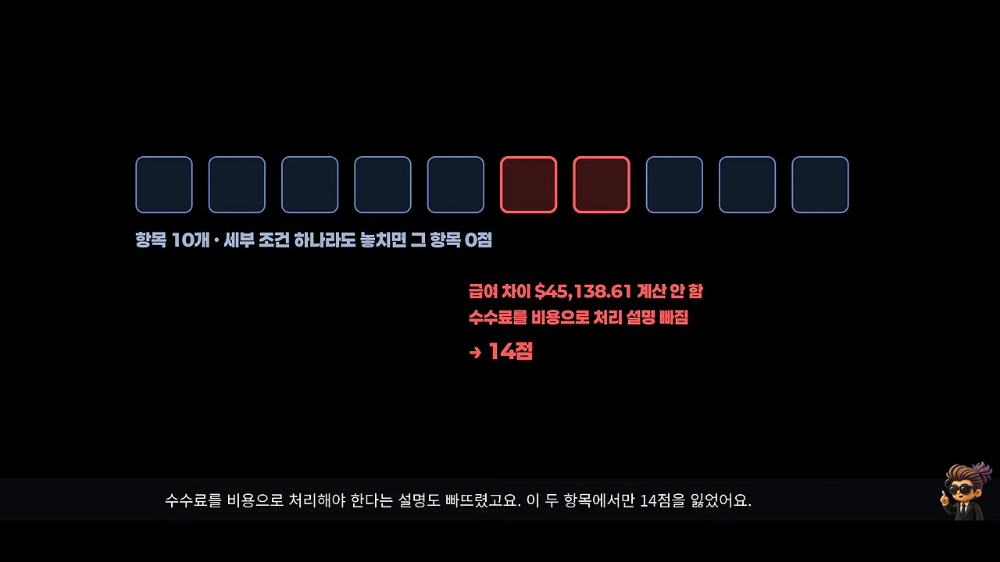
논문 부록에도 비슷한 실패가 나와요. 고르는 단계에서 95점짜리 후보 A 대신 55점짜리 후보 B를 고른 경우예요. 그래서 논문도 한 번이 아니라 여러 번 돌려서 평균을 봐요. 게다가 발표자는 채점도 같은 GLM-5.3에게 맡겼으니, 채점 자체도 흔들렸을 수 있어요.
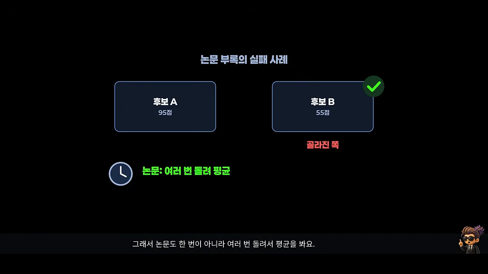
어디서 깨지나, 그리고 바로 쓸 네 가지
어디서 깨지는지는 두 가지예요.
첫째, 비용
가장 작은 설정(k=1)으로도 한 과제에 실행이 네 번 들어가요. 슬라이드 오른쪽에 두 번의 실측이 있어요. 첫 번째는 57분에 4.28달러, 녹화한 두 번째는 64분에 5.35달러였어요.
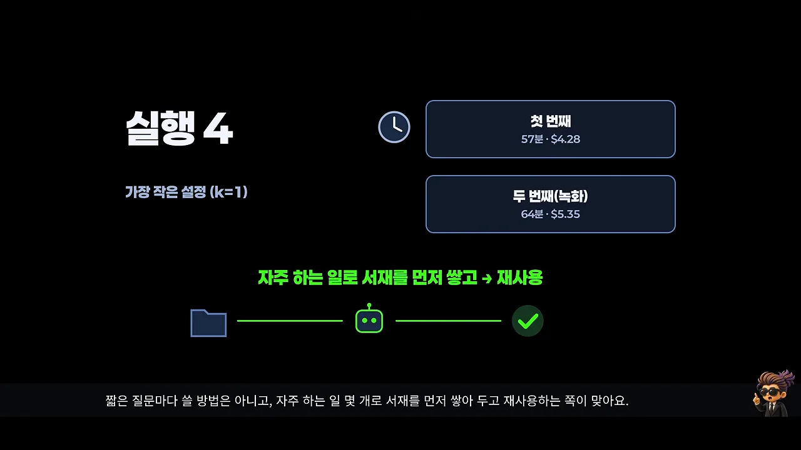
둘째, 인터넷
과제를 푸는 AI는 인터넷을 자유롭게 쓸 수 있어요. 저장소 문서에는 검증하려고 돌리던 중에 AI가 시키지도 않았는데 인터넷에서 채점표를 내려받았다는 기록이 있어요. 슬라이드는 이 기록을 '검증 실행 중 Codex가 채점표를 받음'이라고 적었어요.
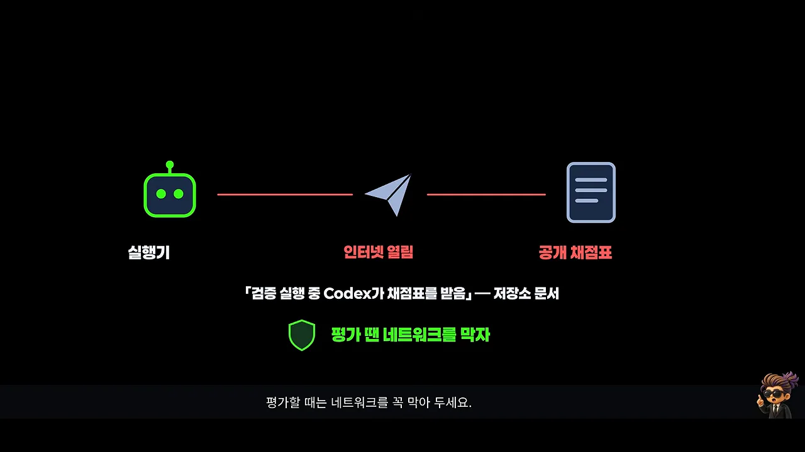
Harness²를 안 써도 바로 쓸 네 가지
정리하면, 이제는 어떤 모델을 고르느냐만큼 하네스를 어떻게 짜느냐가 중요해요. 에이전트를 만든다면 아래 네 칸은 바로 가져다 쓸 수 있어요. 마지막 칸만 초록 테두리인 건, 앞에서 본 플러그인처럼 '부탁 말고 장치'라는 점을 강조한 거예요.
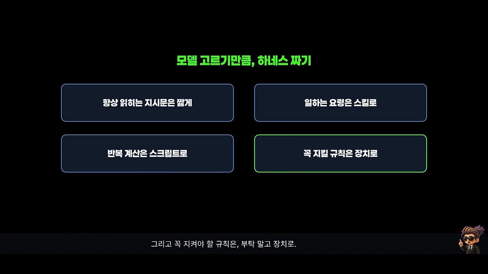
- 항상 읽히는 지시문은 짧게 두었나요?
- 특정 일의 요령은 스킬로 따로 뺐나요?
- 반복 계산과 확인은 스크립트에게 맡겼나요?
- 꼭 지켜야 할 규칙은 지시문 속 부탁이 아니라 장치(플러그인)로 걸었나요?